6
298 fiches en français pour le niveau 6, prêtes à imprimer et avec corrigé.
298 ressources
Thème

Handicap – Compréhension de lecture : texte à trous, écoute et mots mêlés

Handball – Compréhension de lecture : texte à trous, écoute et mots mêlés

Tours – Fiche de géographie : texte à trous, compréhension orale et mots mêlés

Hamster – Compréhension de lecture : texte à trous, écoute et mots mêlés

Limoges – Fiche de géographie : texte à trous, compréhension orale et mots mêlés

Hallig – Compréhension de lecture : texte à trous, écoute et mots mêlés

Le Mans – Fiche de géographie : texte à trous, compréhension orale et mots mêlés

Hafnium – Compréhension de lecture : texte à trous, écoute et mots mêlés

Caen – Fiche de géographie : texte à trous, compréhension orale et mots mêlés

Hadès – Compréhension de lecture : texte à trous, écoute et mots mêlés

Boulogne-Billancourt – Fiche : texte à trous, compréhension orale et mots mêlés

Annecy – Fiche de géographie : texte à trous, compréhension orale et mots mêlés

Gênes – Compréhension de lecture : texte à trous, écoute et mots mêlés

Amiens – Fiche de géographie : texte à trous, compréhension orale et mots mêlés

Guinée – Compréhension de lecture : texte à trous, écoute et mots mêlés

Géorgie – Compréhension de lecture : texte à trous, écoute et mots mêlés

Générateur électrique – Texte à trous, compréhension orale et mots mêlés

Général – Compréhension de lecture : texte à trous, écoute et mots mêlés

Gué – Compréhension de lecture : texte à trous, écoute et mots mêlés

Guyana – Compréhension de lecture : texte à trous, écoute et mots mêlés
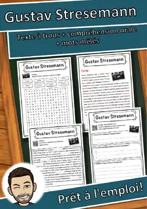
Gustav Stresemann – Texte à trous, compréhension orale et mots mêlés
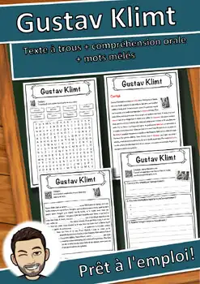
Gustav Klimt – Compréhension de lecture : texte à trous, écoute et mots mêlés
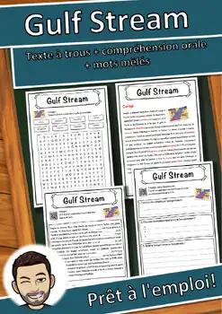
Gulf Stream – Compréhension de lecture : texte à trous, écoute et mots mêlés

Guitare – Compréhension de lecture : texte à trous, écoute et mots mêlés
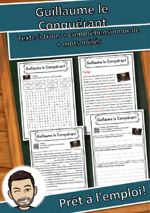
Guillaume le Conquérant – Texte à trous, compréhension orale et mots mêlés
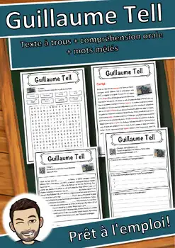
Guillaume Tell – Compréhension de lecture : texte à trous, écoute et mots mêlés
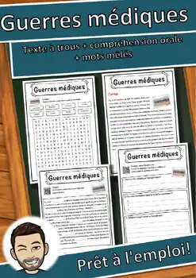
Guerres médiques – Texte à trous, compréhension orale et mots mêlés
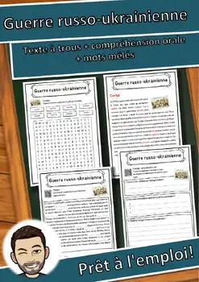
Guerre russo-ukrainienne – Texte à trous, compréhension orale et mots mêlés

Angers – Fiche de géographie : texte à trous, compréhension orale et mots mêlés
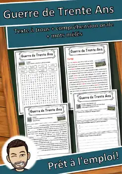
Guerre de Trente Ans – Texte à trous, compréhension orale et mots mêlés
Guerre de Sécession – Texte à trous, compréhension orale et mots mêlés
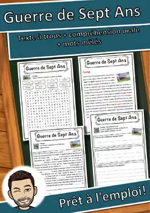
Guerre de Sept Ans – Texte à trous, compréhension orale et mots mêlés
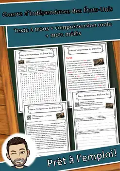
Guerre d'indépendance des États-Unis – Lecture, écoute et mots mêlés (FLS/FLE)
Guerre civile – Compréhension de lecture : texte à trous, écoute et mots mêlés
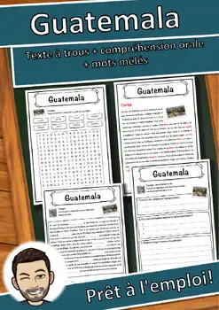
Guatemala – Compréhension de lecture : texte à trous, écoute et mots mêlés

Grève étudiante pour le climat – Lecture, écoute et mots mêlés (FLS/FLE)
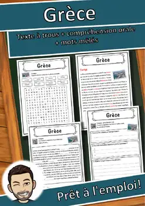
Grèce – Compréhension de lecture : texte à trous, écoute et mots mêlés
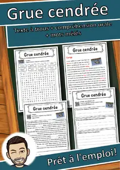
Grue cendrée – Compréhension de lecture : texte à trous, écoute et mots mêlés
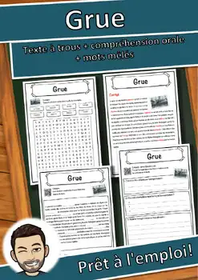
Grue – Compréhension de lecture : texte à trous, écoute et mots mêlés

Grotte – Compréhension de lecture : texte à trous, écoute et mots mêlés
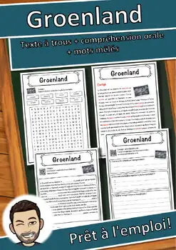
Groenland – Compréhension de lecture : texte à trous, écoute et mots mêlés
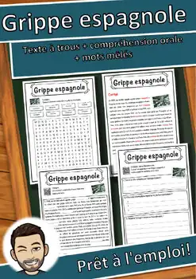
Grippe espagnole – Texte à trous, compréhension orale et mots mêlés
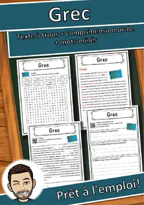
Grec – Compréhension de lecture : texte à trous, écoute et mots mêlés
Grands Lacs – Compréhension de lecture : texte à trous, écoute et mots mêlés
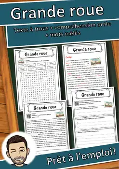
Grande roue – Compréhension de lecture : texte à trous, écoute et mots mêlés
Grand-duc de Luxembourg – Texte à trous, compréhension orale et mots mêlés
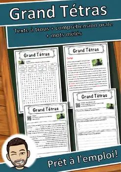
Grand Tétras – Compréhension de lecture : texte à trous, écoute et mots mêlés
Grand Canyon – Compréhension de lecture : texte à trous, écoute et mots mêlés
Aucune ressource trouvée – essaie un autre mot ou un autre filtre.